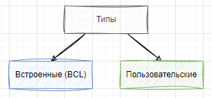
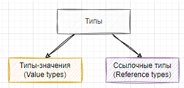
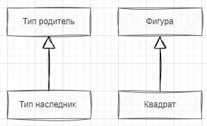
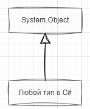
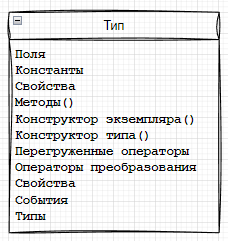
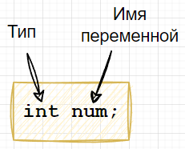

| Тема 2. Типы в C# и .NET. | ||
| Назад | ||
|
Под типом в C# понимается: класс, интерфейс, структура, перечисление и делегат. При этом тип может быть встроенным или пользовательским. Встроенные типы – это те, что предлагает сама платформа .NET , они входят в состав BCL. К пользовательским относятся все типы, спроектированные пользователями (или кодогенераторами).  Среди всех типов, предоставляемых BCL, в C# выделяется специальная группа, которая называется примитивные типы (иногда их называют простые). Это такие типы, для которых в языке предусмотрены специальные синтаксические конструкции для объявления и инициализации. В эту группу входят типы, которые разработчики используют чаще всего: числа, символы, строки и т.п. Важными являются понятия ссылочных типов и типов-значений. Понимание разницы между ними является одним из фундаментальных знаний, которым должен обладать разработчик на C#. 
К типам-значениям относятся
числа, символы ( К p;p;ссылочным типам относятся строки, классы, интерфейсы. В этом случае мы перечислили не все виды ссылочных типов и типов-значений, более подробно о них вы познакомитесь в следующих уроках. Отметим, что система типов в C# поддерживает наследование. Это одни из базовых принципов объектно-ориентированного программирования. Суть в том, что вы можете создавать одни типы, которые являются наследниками других. В этом случае наследник получает в распоряжение весь функционал родительского класса, он может переопределять некоторые из методов базового класса и представляться родительским, когда это необходимо.
Родительский тип и тип-наследник связаны отношением “является”.
Например, на рисунке ниже представлен вариант наследования
класса 
Помимо отношения “является”, есть
отношение “имеет”.
Например, класс
Абсолютно все классы в C# являются наследниками класса  Тип может содержать довольно большое количество различных структурных элементов, таких как константы, поля, конструкторы экземпляров и типа, методы, перегруженные операторы, свойства и др. О них мы подробно поговорим при более глубоком обсуждении внутренней структуры типов.  Объявление и инициализация переменныхВ общем случае, при объявлении переменной в C#, сначала указывается тип переменной, затем ее имя.  // Переменная типа int с именем num int num; // Переменная типа string с именем str string str; Задание значения переменной можно произвести в момент ее объявления: int radius = 10; string name = "John"; либо после: string name; name = "John"; Задание значения переменной называют инициализацией.
На предыдущем шаге мы с вами говорили, что в C# есть переменные ссылочного
типа и типа-значения.
Более подробно о них мы поговорим далее, но что касается вопроса
объявления и инициализации необходимо иметь в виду, что
переменную ссылочного типа нельзя использовать до тех пор, пока
она не будет проинициализирована. Дело в том, что переменные
значимых типов, если им не присвоить значение, получают
некоторое “значение по умолчанию”, для чисел – это ноль, для
Компиляция программы, представленной ниже, завершится с ошибкой,
т.к. переменная string str; Console.Write(str); // Ошибка!
Примеры, которые мы с вами рассмотрели, приведены с участием
переменных примитивных
типов, для них используется сокращенный вариант
инициализации. Для всех остальных типов инициализация
производится с помощью оператора |
||
| Конспект подготовлен Бакулиным А. М. 2012 год. | ||